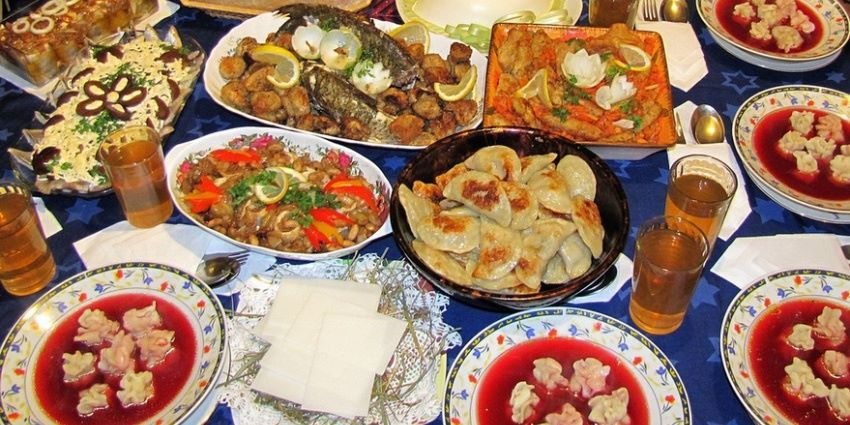

Boże Narodzenie to jedno z najważniejszych i najpiękniejszych świąt chrześcijańskich, obchodzone corocznie 25 grudnia. Upamiętnia ono narodziny Jezusa Chrystusa i jest czasem radości, miłości, a także rodzinnych spotkań. W tym okresie dekorujemy domy, wymieniamy się prezentami i spędzamy czas z najbliższymi.
W Polsce jednym z najbardziej znanych zwyczajów jest Wigilia, która odbywa się 24 grudnia. Zasiadamy wtedy do uroczystego posiłku, dzielimy się opłatkiem i składamy sobie życzenia. W wielu domach pojawiają się także choinki, na których wiszą ozdoby, a pod nimi znajdują się prezenty. W innych krajach, takich jak Niemcy czy USA, popularne są jarmarki bożonarodzeniowe i kolędowanie.
Boże Narodzenie ma nie tylko wymiar religijny, ale także społeczny i kulturowy. Jest to czas, kiedy ludzie skupiają się na wartościach takich jak dobroć, dzielenie się z innymi oraz pomoc potrzebującym. To także okres, kiedy budujemy więzi rodzinne i przyjacielskie, a atmosferę świąteczną tworzą wspólne kolędowanie, gotowanie tradycyjnych potraw i radosne chwile spędzone z bliskimi.
Boże Narodzenie to wyjątkowy czas, który łączy ludzi na całym świecie. To czas obdarowywania się miłością, prezentami i wspólnego przeżywania radości narodzin Jezusa. Choć święto ma swoje korzenie w tradycji chrześcijańskiej, jest obchodzone przez osoby różnych religii i kultur, łącząc wszystkich w atmosferze pokoju i radości.
